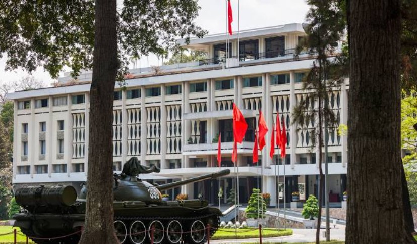
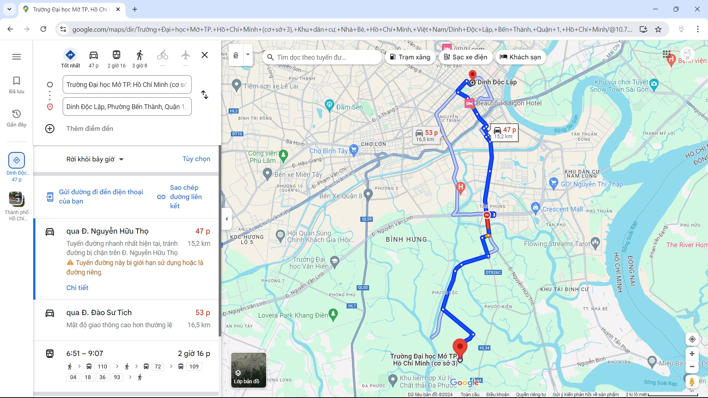
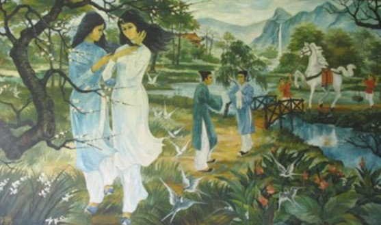

Dinh Độc Lập
Dinh Thống Nhất hay Dinh Độc Lập là một công trình kiến trúc nổi tiếng do người Pháp xây dựng ở Sài Gòn. Dinh Thống Nhất được xếp hạng là một trong 10 di tích quốc gia đặc biệt đầu tiên của cả nước vào năm 2009, được đông đảo du khách trong nước và nước ngoài đến tham quan và cũng là nơi hội họp, tiếp khách của các cấp lãnh đạo trung ương cũng như của thành phố.
Mục lục các địa điểm
Giới thiệu về Dinh Độc Lập
Dinh Thống Nhất Sài Gòn còn được biết đến với nhiều cái tên như: Dinh Độc Lập, Dinh Toàn Quyền, Dinh Thống Đốc, Hội trường Thống Nhất, Dinh Norodom. Công trình Dinh được thiết kế bởi Kiến trúc sư Ngô Viết Thụ, Dinh được khởi công xây dựng ngày 1/7/1962, khánh thành ngày 31/10/1966. Ông đã kết hợp hài hòa giữa nghệ thuật kiến trúc hiện đại và kiến trúc truyền thống phương Đông vào công trình. Đây từng là nơi ở và làm việc của Tổng thống nước Việt Nam dân chủ Cộng hòa trong thời kỳ chiến tranh.
Dinh được xây dựng trên khu đất có diện tích 12 ha, khoảng 100 phòng, gồm 3 tầng chính, hai gác lửng, một sân thượng và tầng hầm.
Dinh Thống Nhất ngày nay nằm tại địa chỉ số 135 Nam Kỳ Khởi Nghĩa, phường Bến Nghé, quận 1, Hồ Chí Minh. Dinh tọa lạc ngay vị trí trung tâm, gần các điểm đến hấp dẫn: Nhà thờ Đức Bà, chợ Bến Thành, tòa nhà Bitexco, Thảo Cẩm Viên, phố đi bộ Nguyễn Huệ, bảo tàng lịch sử Việt Nam...

Dinh Độc Lập
Cách di chuyển đến Dinh Độc Lập
Nằm ở vị trí trung tâm thành phố nên việc di chuyển đến Dinh Thống Nhất Sài Gòn rất dễ dàng. Bạn có thể đi bộ, ô tô, xe máy hay xe buýt tùy thuộc vào thời gian và nơi ở của bạn.
Từ trung tâm thành phố, bạn rẽ qua đường Nam Kỳ Khởi Nghĩa đi khoảng 600 m là đến Dinh Thống Nhất.

Bản đồ di chuyển từ trường đại học Mở đến Dinh Thống Nhất
Khám phá Dinh Độc Lập
Khu cố định Dinh Thống Nhất Sài Gòn: có hơn 100 căn phòng trang trí theo phong cách khác nhau: phòng làm việc của Tổng thống – Phó Tổng thống, phòng nội các, phòng đại yên, phòng khánh tiết, phòng ủy nhiệm thư, phòng trình quốc thư, phòng thông tin liên lạc, phòng ngủ của gia đình Tổng thống,…
Khu chuyên đề Dinh Thống Nhất Sài Gòn: trưng bày các chuyên đề như: Hiệp định Paris, chiến dịch Hồ Chí Minh qua tài liệu dự trữ; Đường Hồ Chí Minh qua các tài liệu của chính quyền Sài Gòn; các cuộc triển lãm ảnh, ….
Khu bổ sung Dinh Thống Nhất Sài Gòn: trưng bày những bức ảnh do người dân lưu giữ từ các thời kháng chiến đến khi Thống Nhất. Khi tham quan, du khách phần nào có thể cảm nhận được cuộc kháng chiến oanh liệt và niềm vui chiến thắng của quân dân ta. Từ đó chúng ta càng thấy trân trọng và tự hào hơn về đất nước mình.
Ngoài ra, khi đến tham quan Dinh Thống Nhất, bạn còn được chiêm ngưỡng: Bức tranh sơn dầu miêu tả khung cảnh làng quê Việt Nam của họa sĩ Ngô Viết Thụ, bức tranh chị em Thúy Kiều, Thúy Vân gặp Kim Trọng trong ngày Tết Thanh minh, …

Bức tranh chị em Thúy vân, Thúy Kiều trong Dinh Độc Lập
Hy vọng rằng những thông tin trên sẽ giúp cho bạn hiểu hơn và cảm thấy hứng thú với Dinh Độc Lập